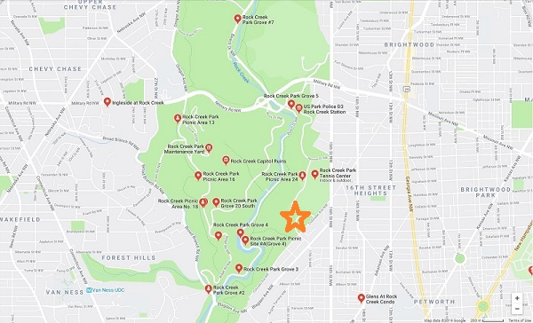

I don't know where I would be without my weekly vegetable delivery from the garden. It helps keep me and my family healthy, happy, and cared for by our neighbors"
- Roberta Smith, produce recipient
"When I got started at Rock Creek I was just looking for something to keep me busy on a Sunday afternoon. But in my time there I've found it to be so much more. I feel like I've found a place and a group of concerned folks that look out for one another. And that take great pride in the difference they make in their neighbors lives. To put it shortly, it's made me a more whole and fulfilled person. It's made me a member of a community."
- John Winston, volunteer
"I didn't like vegetables. Now I do because they send us the tiny tomatoes. They look like grapes. I like grapes."
- Hasan Shah, 6 years old
Come visit us! Find us off Morrow Dr NW or Colorado Ave NW past the sports complex. You're always welcome with us.
